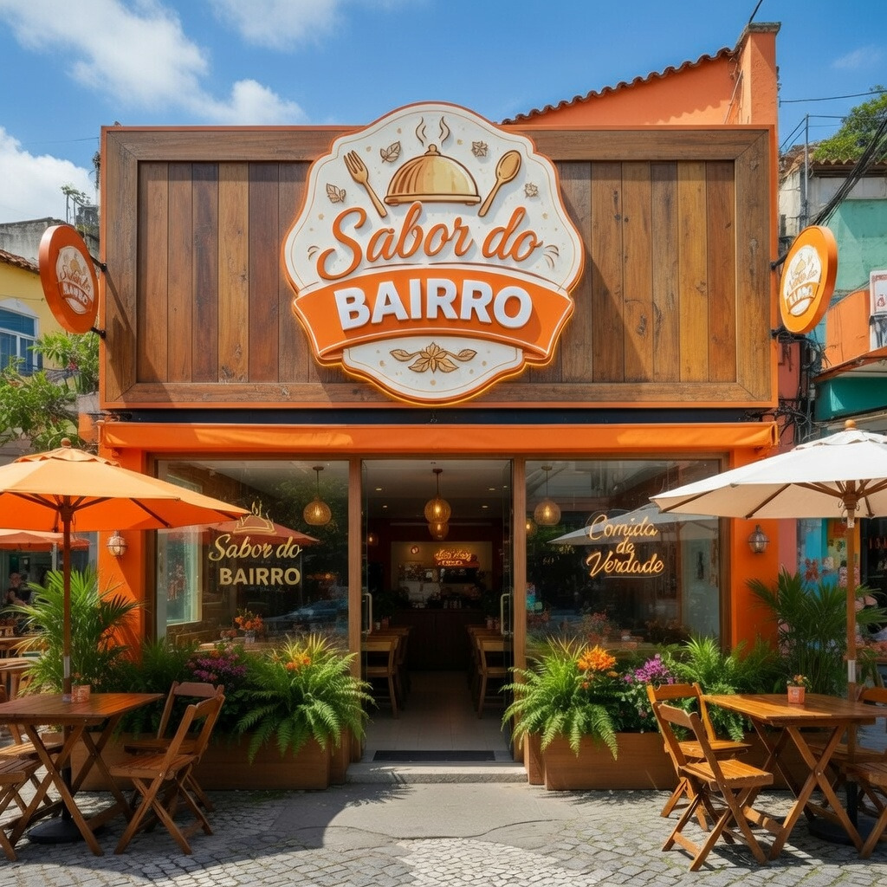

Sobre nossa empresa
No coração da Tijuca nasceu o Sabor do Bairro, que começou como uma simples pensão na casa de Dona Maria. Com poucas mesas e comida caseira, o lugar rapidamente conquistou os moradores pela qualidade e pelo acolhimento. Com o passar dos anos, a fama cresceu e ultrapassou a Tijuca, se espalhando por todo o Rio de Janeiro. O pequeno espaço já não comportava tantos clientes, e a pensão deu lugar a um restaurante maior. Hoje, o Sabor do Bairro é referência, mas continua com a mesma essência: comida feita com carinho e aquele verdadeiro gosto de casa.
